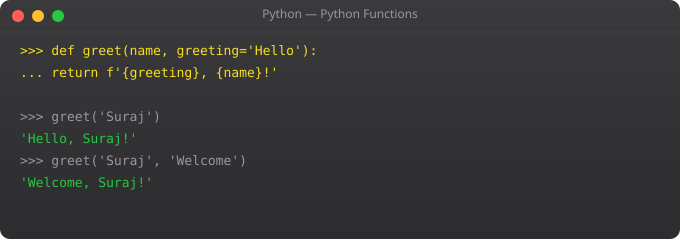

Decision making is at the heart of every useful program. Should this menu item be shown? Is the user authorised? Did the API call succeed? Python handles all of this with if, elif, and else -- and its syntax is clean enough that the code often reads like a plain English description of the logic.
score = 78
if score >= 90:
grade = "A"
elif score >= 80:
grade = "B"
elif score >= 70:
grade = "C"
elif score >= 60:
grade = "D"
else:
grade = "F"
print(f"Score: {score}, Grade: {grade}")# Falsy values
if 0: print("not printed")
if "": print("not printed")
if []: print("not printed")
if None: print("not printed")
# Pythonic checks (use these)
my_list = [1, 2, 3]
if my_list: # instead of: if len(my_list) > 0:
print("List has items")
name = ""
display_name = name or "Anonymous" # "Anonymous"age = 25
has_ticket = True
if age >= 18 and has_ticket:
print("Enter")
if age >= 65 or has_ticket:
print("Eligible for discount")
if not has_ticket:
print("Purchase a ticket first")
# in operator for membership
allowed = ["suraj", "raj", "priya"]
user = "suraj"
if user in allowed:
print("Access granted")# Regular if-else
if score >= 50:
result = "Pass"
else:
result = "Fail"
# Ternary (same result, one line)
result = "Pass" if score >= 50 else "Fail"
# In list comprehension
numbers = [-3, -1, 0, 2, 5]
abs_vals = [n if n >= 0 else -n for n in numbers]
print(abs_vals) # [3, 1, 0, 2, 5]def check_access(username, role, resource):
if username not in ["suraj", "raj"]:
return "Unknown user"
if role == "admin":
return "Full access"
elif role == "editor":
if resource in ["posts", "pages"]:
return "Access granted"
else:
return "Access denied for this resource"
else:
return "Read only"
print(check_access("suraj", "admin", "settings"))status = 404
match status:
case 200:
print("OK")
case 201:
print("Created")
case 404:
print("Not Found")
case 500:
print("Server Error")
case _:
print(f"Unknown: {status}")
# match with guard conditions
score = 85
match score:
case s if s >= 90:
print("Excellent")
case s if s >= 70:
print("Good")
case _:
print("Needs improvement")def validate_login(username, password):
valid_users = {
"suraj": "secure123",
"raj": "pass456"
}
if not username or not password:
return "Username and password required"
if username not in valid_users:
return "User not found"
if valid_users[username] != password:
return "Wrong password"
return "Login successful"
print(validate_login("suraj", "secure123")) # Login successful
print(validate_login("suraj", "wrong")) # Wrong passwordif evaluates a condition. If True, its indented block runs. elif checks the next condition if the previous was False. else runs if nothing matched. Python uses 4-space indentation, not curly braces.
"value_if_true if condition else value_if_false". Example: result = "Pass" if score >= 50 else "Fail". Use for simple one-liners. Use regular if-else for anything complex.
False, None, 0, 0.0, empty string, empty list, empty dict, empty tuple, empty set. Everything else is truthy. Lets you write: if my_list: instead of if len(my_list) > 0:
Use and for all-must-be-true: if age >= 18 and has_id: Use or for any-must-be-true. Chain comparisons: if 18 <= age <= 65: Use in for membership: if username in allowed_users:
Added in Python 3.10 -- like switch/case in other languages. Matches a value against patterns. Supports guards (if conditions), type matching, and structural patterns. More powerful than traditional switch.
In Part 5, we cover loops -- the feature that lets your programs process any number of items with the same code.
← Back to Blogdef calculate_shipping(weight, destination, is_member, order_total):
"""Calculate shipping cost based on multiple conditions."""
if order_total >= 2000 and is_member:
return 0 # Free shipping for members on large orders
base_rate = {"domestic": 50, "regional": 120, "international": 350}
rate = base_rate.get(destination, 350)
if weight <= 0.5:
weight_charge = 0
elif weight <= 2:
weight_charge = 30
elif weight <= 5:
weight_charge = 80
else:
weight_charge = 80 + (weight - 5) * 20 # Rs. 20 per kg over 5kg
total = rate + weight_charge
if is_member:
total *= 0.85 # 15% member discount
return round(total, 2)
print(calculate_shipping(1.5, "domestic", True, 500)) # 68.0
print(calculate_shipping(3, "regional", False, 1500)) # 200.0def process_user_payment(user, amount, card_number):
# Guard clauses - handle invalid inputs first
if not user:
return {"error": "User required"}
if not user.is_active:
return {"error": "User account is inactive"}
if amount <= 0:
return {"error": "Amount must be positive"}
if amount > 100000:
return {"error": "Amount exceeds daily limit"}
if not card_number or len(card_number) != 16:
return {"error": "Invalid card number"}
# Main logic is clean when guard clauses handle edge cases
return process_charge(user, amount, card_number)def handle_http_status(status_code: int, path: str) -> dict:
match status_code:
case 200 | 201 | 204:
return {"action": "success", "log": False}
case 400:
return {"action": "reject", "log": True,
"error": f"Bad request for: {path}"}
case 401 | 403:
return {"action": "deny", "log": True,
"alert": "Possible unauthorized access attempt"}
case 404:
return {"action": "not_found", "log": False}
case status if 500 <= status <= 599:
return {"action": "alert", "log": True,
"alert": f"Server error {status} at {path}"}
case _:
return {"action": "unknown", "log": True}
print(handle_http_status(403, "/admin/dashboard"))
print(handle_http_status(502, "/api/users"))def process_event(event: dict) -> str:
match event:
case {"type": "user_login", "user_id": int(uid), "ip": str(ip)}:
return f"Login: user {uid} from {ip}"
case {"type": "payment", "amount": float(amt)} if amt > 10000:
return f"High-value payment: Rs.{amt:.2f} -- flagged"
case {"type": "payment", "amount": float(amt)}:
return f"Payment: Rs.{amt:.2f}"
case {"type": "error", "code": int(code), "message": str(msg)}:
return f"Error {code}: {msg}"
case _:
return "Unknown event type"
print(process_event({"type": "user_login", "user_id": 42, "ip": "10.0.1.5"}))